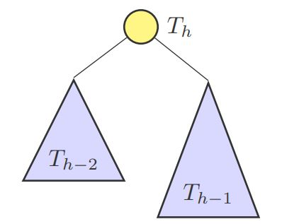

Dê exemplo de uma família de árvores AVL cuja exclusão de nós implica a realização de O(lgn) operações de rotação para o rebalanceamento.
Um exemplo de família de árvores AVL cujo a exclusão de nós implica em O(lgn) seria a família das árvores de Fibonacci.
Como visto em sala, essa família de árvores tem o padrão de: T(h)->left = T(h-2) e T(h)->right = T(h-1).

Seguindo este pensamento, observe a árvore T(5) com os F(b) descritos abaixo.
 x.jpg)
Por sua vez, removeremos o nó com X. Primeiro, o algoritmo buscará o nó X em O(lgn), após o encontrar, irá deleta-lo. Na volta recursiva o seu pai (nó com P) ficará com seu F(b) = 2, que indicará que é necessário realizar uma rotação a esquerda em P. Resultando na árvore abaixo.
 deletada e rodada.jpg)
Após esta rotação, a recursão voltará a raiz desta árvore, que está com seu F(b) = 2 após a rotação que ocorreu. Portanto, a próxima rotação deve ser feita na raiz e também será a esquerda. Segue imagem abaixo.
 final.jpg)
Como podemos observar, agora todos os F(b) estão de acordo com o padrão, não há mais nada na pilha de recursão (pois o último nó a ser visto era a raiz que foi recém rotada) e, como a busca de X foi em O(lgn) e se fez necessário rotação em todos os nós até a raiz (que também retornou em O(lgn)) foram realizadas O(lgn) rotações.